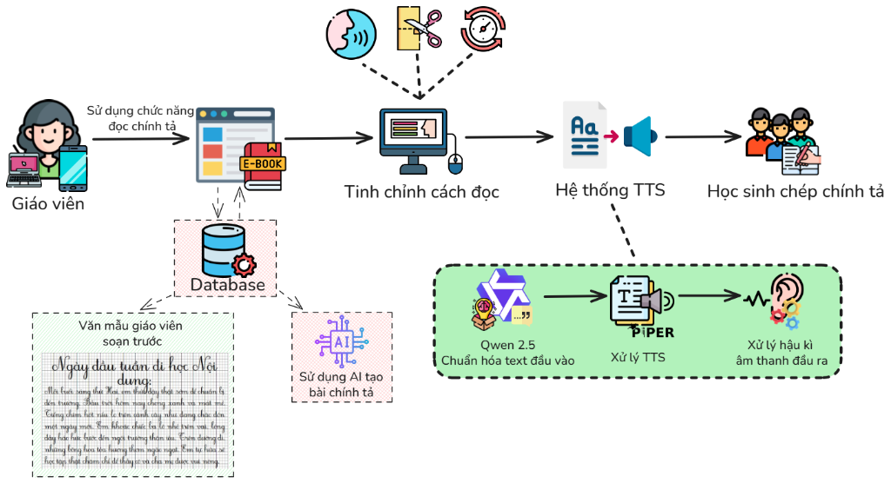

Quy trình khép kín giúp giáo viên chuẩn bị bài và phát âm tự động cho học sinh chép bài

Lấy bài mẫu có sẵn hoặc dùng AI tạo bài mới
Chọn giọng đọc, cắt cụm ngắn, chỉnh tốc độ & nghỉ
Đổi số thành chữ, ngắt cụm và thêm lệnh dấu câu
Chuyển văn bản thành giọng đọc Offline trên thiết bị
Khử tiếng rè, làm ấm giọng và phát ra loa lớp học
Giáo viên linh hoạt chọn bài đọc từ kho dữ liệu có sẵn hoặc nhờ AI tự động biên soạn
3 nhóm cài đặt giúp máy đọc chậm rãi, ngắt nghỉ giống hệt giáo viên đang đọc trên lớp
Quy trình biến văn bản trên màn hình thành giọng đọc trong trẻo phát ra loa lớp học
20/11 đổi thành "hai mươi tháng mười một", Lớp 3A thành "lớp ba A".